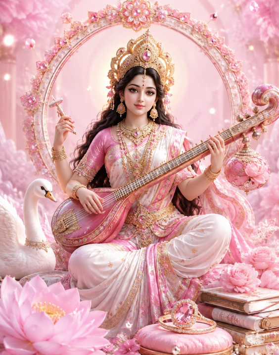
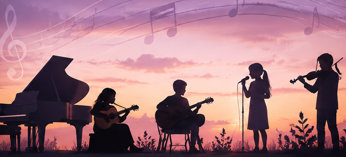

About Shahin Music Academy
Music is more than just sound. It is emotion, expression, creativity and a beautiful journey of the soul.
At Shahin Music Academy, we believe that every person has a unique musical voice. Our academy provides a welcoming environment where students can learn, practice and grow their musical talents with confidence.
From learning instruments to developing vocal skills, our goal is to make music education enjoyable, inspiring and meaningful for every student.
Goddess Saraswati is traditionally associated with knowledge, wisdom, music and the arts. Her presence with the veena represents the beauty of music and the harmony between knowledge and creativity.

Goddess Saraswati — Symbol of Music, Knowledge and Creativity
OUR MUSICAL INSPIRATION
Music, Devotion & Lord Krishna
At Shahin Music Academy, we believe that music is more than just learning notes and instruments. It is a beautiful journey of devotion, expression and connection with the soul.
Lord Krishna is one of the greatest inspirations in the world of music. His divine flute represents the power of music to spread love, peace and harmony.
Just as Krishna's flute touched the hearts of everyone who heard it, our goal at Shahin Music Academy is to help every student discover the beauty and joy of music.
"Let music become the language of your heart, bringing peace, devotion and joy."

OUR PURPOSE
Our Mission & Vision
At Shahin Music Academy, we believe that music has the power to inspire, connect and transform lives.
OUR MISSION
Inspiring Every Heart Through Music
Our mission at Shahin Music Academy is to provide quality music education in a friendly, creative and inspiring environment.
We help students develop their musical skills, confidence and creativity while encouraging them to discover their own unique musical voice.
- ♪ Provide quality music education
- ♪ Encourage creativity and confidence
- ♪ Develop strong musical foundations
- ♪ Make learning music enjoyable for everyone
OUR VISION
Creating a World Filled With Music
Our vision is to create a vibrant musical community where every learner can explore their passion, express themselves freely and grow through the power of music.
We dream of nurturing talented musicians who can share their music with confidence and bring happiness, harmony and inspiration to others.
- ♪ Nurture future musicians and artists
- ♪ Build a strong musical community
- ♪ Encourage lifelong love for music
- ♪ Spread joy, creativity and harmony

10+
Branches
50+
Live Concerts
1,000+
Students Trained
15+
Years of Musical Journey